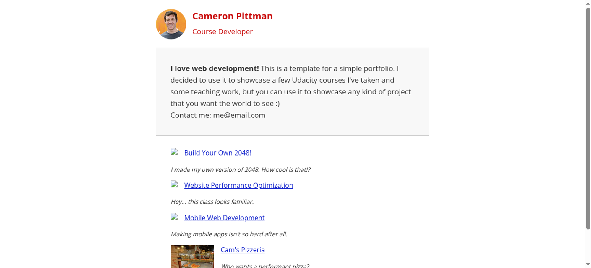

Tested 2025-10-17 14:04:52 using Chrome 138.0.7204.168 .(runtime settings).
| Metric | Value |
|---|---|
| Page metrics | |
| Performance score | 87 |
| Total page size | 94.9 KB |
| Requests | 11 |
| Timing metrics | |
| TTFB | 5 ms |
| First Paint | 220 ms |
| Fully Loaded | 344 ms |
| Google Web Vitals | |
| TTFB | 5 ms |
| First Contentful Paint (FCP) | 220 ms |
| Largest Contentful Paint (LCP) | 320 ms |
| Cumulative Layout Shift (CLS) | 0.00 |
| Visual Metrics | |
| First Visual Change | 267 ms |
| Speed Index | 303 ms |
| Visual Complete 85% | 368 ms |
| Visual Complete 99% | 368 ms |
| Last Visual Change | 401 ms |

Use--filmstrip.showAll to show all filmstrips.
The coach helps you find performance problems on your web page using web performance best practice rules. And gives you advice on privacy and best practices. Tested using Coach-core version 8.1.1.

| Title | Advice | Score | ||||||
|---|---|---|---|---|---|---|---|---|
| Inline CSS for faster first render (inlineCss) | The page loads 3 CSS requests inside of head, try to inline the CSS for the first render and lazy load the rest. | 70 | ||||||
| Description: In the early days of the Internet, inlining CSS was one of the ugliest things you can do. That has changed if you want your page to start rendering fast for your user. Always inline the critical CSS when you use HTTP/1 and HTTP/2 (avoid doing CSS requests that block rendering) and lazy load and cache the rest of the CSS. It is a little more complicated when using HTTP/2. Does your server support HTTP push? Then maybe that can help. Do you have a lot of users on a slow connection and are serving large chunks of HTML? Then it could be better to use the inline technique, becasue some servers always prioritize HTML content over CSS so the user needs to download the HTML first, before the CSS is downloaded. | ||||||||
| Offenders: | ||||||||
| Avoid Frontend single point of failures (spof) | The page has 2 requests inside of the head that can cause a SPOF (single point of failure). Load them asynchronously or move them outside of the document head. | 80 | ||||||
| Description: A page can be stopped from loading in the browser if a single JavaScript, CSS, and in some cases a font, couldn't be fetched or is loading really slowly (the white screen of death). That is a scenario you really want to avoid. Never load 3rd-party components synchronously inside of the head tag. | ||||||||
| Offenders: | ||||||||
| Avoid extra requests by setting cache headers (cacheHeaders) | The page has 6 requests that are missing a cache time. Configure a cache time so the browser doesn't need to download them every time. It will save 22.9 kB the next access. | 40 | ||||||
| Description: The easiest way to make your page fast is to avoid doing requests to the server. Setting a cache header on your server response will tell the browser that it doesn't need to download the asset again during the configured cache time! Always try to set a cache time if the content doesn't change for every request. | ||||||||
| Offenders: | ||||||||
| Long cache headers is good (cacheHeadersLong) | The page has 1 request that have a shorter cache time than 30 days (but still a cache time). | 99 | ||||||
| Description: Setting a cache header is good. Setting a long cache header (at least 30 days) is even better beacause then it will stay long in the browser cache. But what do you do if that asset change? Rename it and the browser will pick up the new version. | ||||||||
| Offenders: | ||||||||
| Always compress text content (compressAssets) | The page has 1 request that are served uncompressed. You could save a lot of bytes by sending them compressed instead. | 90 | ||||||
| Description: In the early days of the Internet there were browsers that didn't support compressing (gzipping) text content. They do now. Make sure you compress HTML, JSON, JavaScript, CSS and SVG. It will save bytes for the user; making the page load faster and use less bandwith. | ||||||||
Offenders:
| ||||||||
| Don't use private headers on static content (privateAssets) | The page has 1 request with private headers. Make sure that the assets really should be private and only used by one user. Otherwise, make it cacheable for everyone. | 90 | ||||||
| Description: If you set private headers on content, that means that the content are specific for that user. Static content should be able to be cached and used by everyone. Avoid setting the cache header to private. | ||||||||
| Offenders: | ||||||||
| Avoid missing and error requests (responseOk) | The page has 1 error response. The page has 1 response with code 404. | 90 | ||||||
| Description: Your page should never request assets that return a 400 or 500 error. These requests are never cached. If that happens something is broken. Please fix it. | ||||||||
| Offenders: | ||||||||
| Title | Advice | Score |
|---|---|---|
| Avoid too many third party requests (thirdParty) | The page do 36% requests to third party domains (4 requests and 71.3 kB). First party is 7 requests and 25.8 kB. The page transfer more bytes from third party domains (71.3 kB) then first party (25.8 kB). The regex .*docker.* was used to calculate first/third party requests. | 0 |
| Description: Do not load most of your content from third party URLs. | ||
| Avoid unnecessary headers (unnecessaryHeaders) | There are 4 responses that sets both a max-age and expires header. There are 1 response that sets a pragma no-cache header (that is a request header). There are 11 responses that sets a server header. | 84 |
| Description: Do not send headers that you don't need. We look for p3p, cache-control and max-age, pragma, server and x-frame-options headers. Have a look at Andrew Betts - Headers for Hackers talk as a guide https://www.youtube.com/watch?v=k92ZbrY815c or read https://www.fastly.com/blog/headers-we-dont-want. | ||
| Offenders: | ||
| Title | Advice | Score |
|---|---|---|
| Avoid using Google Analytics (ga) | The page is using Google Analytics meaning you share your users private information with Google. You should use analytics that care about user privacy, something like https://matomo.org. | 0 |
| Description: Google Analytics share private user information with Google that your user hasn't agreed on sharing. | ||
| Serve your content securely (https) | What!! The page is not using HTTPS. Every unencrypted HTTP request reveals information about user’s behavior, read more about it at https://https.cio.gov/everything/. You can get a totally free SSL/TLS certificate from https://letsencrypt.org/. | 0 |
| Description: A page should always use HTTPS (https://https.cio.gov/everything/). You also need that for HTTP/2. You can get your free SSL/TLC certificate from https://letsencrypt.org/. | ||
| Use a good Content-Security-Policy header to make sure you you avoid Cross Site Scripting (XSS) attacks. (contentSecurityPolicyHeader) | Set a Content-Security-Policy header to make sure you are not open for Cross Site Scripting (XSS) attacks. You can start with setting a Content-Security-Policy-Report-Only header, that will only report the violation, not stop the download. | 0 |
| Description: Content Security Policy is delivered via a HTTP response header, and defines approved sources of content that the browser may load. It can be an effective countermeasure to Cross Site Scripting (XSS) attacks and is also widely supported and usually easily deployed. https://scotthelme.co.uk/content-security-policy-an-introduction/. | ||
| Offenders: | ||
| Set a referrer-policy header to make sure you do not leak user information. (referrerPolicyHeader) | Set a referrer-policy header to make sure you do not leak user information. | 0 |
| Description: Referrer Policy is a new header that allows a site to control how much information the browser includes with navigations away from a document and should be set by all sites. https://scotthelme.co.uk/a-new-security-header-referrer-policy/. | ||
| Offenders: | ||
| Do not share user data with third parties. (thirdPartyPrivacy) | The page has 36% requests that are 3rd party (4 requests with a size of 71.3 kB). The page also have request to companies that harvest data from users and do not respect users privacy (see https://en.wikipedia.org/wiki/Surveillance_capitalism). The page do 4 survelliance requests and uses 2 survelliance tools. The page do 2 analytics requests and uses 1 analytics tool. | 0 |
| Description: Using third party requests shares user information with that third party. Please avoid that! The project https://github.com/patrickhulce/third-party-web is used to categorize first/third party requests. | ||
| Offenders: | ||
| Page info | |
|---|---|
| Title | Cameron Pittman: Portfolio |
| Width | 1350 |
| Height | 707 |
| DOM elements | 45 |
| Avg DOM depth | 5 |
| Max DOM depth | 7 |
| Iframes | 0 |
| Script tags | 3 |
| Local storage | 0 b |
| Session storage | 0 b |
| Network Information API | 4g |
Data collected using Wappalyzer version 6.10.66. With updated code from Webappanalyzer 2024-12-27. Use --browsertime.firefox.includeResponseBodies htmlor --browsertime.chrome.includeResponseBodies htmlto help Wappalyzer find more information about technologies used.
| Technology | Confidence | Category |
|---|---|---|
| Python 3.12.3 | 100 | Programming languages |
| SimpleHTTP 0.6 | 100 | Web servers |
| HSTS | 100 | Security |
| HTTP/3 | 100 | Miscellaneous |
Data collected using Third Party Web 0.26.2
| Cdn |
|---|
| Google Fonts |
| Survelliance |
| Google Fonts |
| Google Analytics |
| Analytics |
| Google Analytics |
| Visual Metrics | |
|---|---|
| First Visual Change | 267 ms |
| Speed Index | 303 ms |
| Visual Complete 85% | 368 ms |
| Visual Complete 95% | 368 ms |
| Visual Complete 99% | 368 ms |
| Last Visual Change | 401 ms |
| Visual Readiness | 134 ms |
| Navigation Timing | |
|---|---|
| backEndTime | 5 ms |
| domContentLoadedTime | 205 ms |
| domInteractiveTime | 205 ms |
| domainLookupTime | 0 ms |
| frontEndTime | 330 ms |
| pageDownloadTime | 1 ms |
| pageLoadTime | 337 ms |
| redirectionTime | 0 ms |
| serverConnectionTime | 0 ms |
| serverResponseTime | 2 ms |
| Google Web Vitals | |
|---|---|
| Time to first byte (TTFB) | 5 ms |
| First Contentful Paint (FCP) | 220 ms |
| Largest Contentful Paint (LCP) | 320 ms |
| Total Blocking Time (TBT) | 0 ms |
| Extra timings | |
|---|---|
| TTFB | 5 ms |
| First Paint | 220 ms |
| Load Event End | 337 ms |
| Fully loaded | 344 ms |
When in time the page main content is rendered (collected using the Largest Contentful Paint API). Read more about Largest Contentful Paint.
| Element type | DIV |
| Element/tag | <div class="hero"></div> |
| Render time | 320 ms |
| Element render delay | 315 ms |
| TTFB | 5 ms |
| Resource delay | 0 ms |
| Resource load duration | 0 ms |
| Load time | 0 ms |
| Size (width*height) | 72836 |
| DOM path | |
| div > div:eq(0)> div > div:eq(0)> | |
The largest contentful paint is highlighted in the image. If no element is highlighted the element was removed before the screenshot or the LCP API couldn't find the element.
No layout shift detected.
Read more about the Long Animation Frames API here here.
The top 10 longest animation frames entries
| Blocking duration | Work duration | Render duration | PreLayout Duration | Style And Layout Duration |
|---|---|---|---|---|
| 0.754 ms | 157.4 ms | 35.1 ms | 35.1 ms | 0 ms |
| http://www.google-analytics.com/analytics.js | ||||
Invoker: http://www.google-analytics.com/analytics.js | ||||
There are no Server Timings.
There are no custom configured scripts.
There are no custom extra metrics from scripting.
| name | value |
|---|---|
| AudioHandlers | 0 |
| AudioWorkletProcessors | 0 |
| Documents | 4 |
| Frames | 1 |
| JSEventListeners | 2 |
| LayoutObjects | 81 |
| MediaKeySessions | 0 |
| MediaKeys | 0 |
| Nodes | 153 |
| Resources | 22 |
| ContextLifecycleStateObservers | 5 |
| V8PerContextDatas | 3 |
| WorkerGlobalScopes | 0 |
| UACSSResources | 0 |
| RTCPeerConnections | 0 |
| ResourceFetchers | 4 |
| AdSubframes | 0 |
| DetachedScriptStates | 2 |
| ArrayBufferContents | 1 |
| LayoutCount | 9 |
| RecalcStyleCount | 8 |
| LayoutDuration | 40 |
| RecalcStyleDuration | 3 |
| DevToolsCommandDuration | 24 |
| ScriptDuration | 16 |
| V8CompileDuration | 0 |
| TaskDuration | 125 |
| TaskOtherDuration | 42 |
| ThreadTime | 0 |
| ProcessTime | 0 |
| JSHeapUsedSize | 1936364 |
| JSHeapTotalSize | 3145728 |
| FirstMeaningfulPaint | 319 |
How the page is built.
| Summary | |
|---|---|
| HTTP version | HTTP/1.0 |
| Total requests | 11 |
| Total domains | 4 |
| Total transfer size | 94.9 KB |
| Total content size | 134.8 KB |
| Responses missing compression | 3 |
| Number of cookies | 0 |
| Third party cookies | 0 |
| Requests per response code | |
|---|---|
| 200 | 10 |
| 404 | 1 |
| URL | Type | Transfer Size | Content Size |
|---|---|---|---|
| http://fonts.gstatic...bj2OVTS-muw.woff2 | font | 47.2 KB | 47.2 KB |
| http://www.google-an....com/analytics.js | javascript | 20.3 KB | 51.1 KB |
| http://host.docker.i...mg/profilepic.jpg | image | 14.1 KB | 14.1 KB |
| http://host.docker.i.../pizzeria-100.jpg | image | 5.5 KB | 5.5 KB |
| http://host.docker.internal:8080/ | html | 2.8 KB | 2.8 KB |
| http://fonts.googlea...oogleapis.com/css | css | 1.6 KB | 11.3 KB |
| http://host.docker.i...080/css/style.css | css | 1.5 KB | 1.5 KB |
| https://www.google-a...ics.com/j/collect | plain | 622 B | 3 B |
| http://host.docker.i...js/perfmatters.js | javascript | 527 B | 527 B |
| http://host.docker.i...080/css/print.css | css | 481 B | 481 B |
| http://host.docker.i...:8080/favicon.ico | html | 335 B | 335 B |
| Content | Header Size | Transfer Size | Content Size | Requests |
|---|---|---|---|---|
| html | 187 B | 2.8 KB | 2.8 KB | 1 |
| css | 1.0 KB | 3.6 KB | 13.3 KB | 3 |
| javascript | 1.0 KB | 20.8 KB | 51.6 KB | 2 |
| image | 377 B | 19.5 KB | 19.5 KB | 2 |
| font | 760 B | 47.2 KB | 47.2 KB | 1 |
| plain | 0 b | 622 B | 3 B | 1 |
| Total | 3.3 KB | 94.5 KB | 134.4 KB | 10 |
| Domain | Total download time | Transfer Size | Content Size | Requests |
|---|---|---|---|---|
| host.docker.internal | 52 ms | 25.2 KB | 25.2 KB | 7 |
| fonts.googleapis.com | 119 ms | 1.6 KB | 11.3 KB | 1 |
| www.google-analytics.com | 373 ms | 20.9 KB | 51.1 KB | 2 |
| fonts.gstatic.com | 92 ms | 47.2 KB | 47.2 KB | 1 |
| type | min | median | max |
|---|---|---|---|
| Expires | 0 seconds | 0 seconds | 1 year |
| Last modified | 6 minutes | 12 weeks | 27 years |
Included requests done after load event end.
| Content | Transfer Size | Requests |
|---|---|---|
| html | 0 b | 0 |
| css | 0 b | 0 |
| javascript | 0 b | 0 |
| image | 0 b | 0 |
| font | 0 b | 0 |
| Total | 335 B | 1 |
Includes requests done after DOM content loaded.
| Content | Transfer Size | Requests |
|---|---|---|
| html | 0 b | 0 |
| css | 0 b | 0 |
| javascript | 0 b | 0 |
| image | 0 b | 0 |
| font | 0 b | 0 |
| Total | 335 B | 1 |
Third party requests categorised by Third party web version 0.26.2.
| Category | Requests |
|---|---|
| cdn | 2 |
| survelliance | 4 |
| analytics | 2 |
| Category | Number of tools |
|---|---|
| cdn | 1 |
| survelliance | 2 |
| analytics | 1 |
| cdn (2 requests) |
| Google Fonts |
| survelliance (4 requests) |
| Google Fonts |
| Google Analytics |
|
| analytics (2 requests) |
| Google Analytics |
|
Calculated using .*docker.* (use --firstParty to configure).
| Content | Header Size | Transfer Size | Content Size | Requests |
|---|---|---|---|---|
| html | 187 B | 2.8 KB | 2.8 KB | 1 |
| css | 371 B | 2.0 KB | 2.0 KB | 2 |
| javascript | 192 B | 527 B | 527 B | 1 |
| image | 377 B | 19.5 KB | 19.5 KB | 2 |
| font | 0 b | 0 b | 0 b | 0 |
| Total | 1.3 KB | 25.2 KB | 25.2 KB | 7 |
| Content | Header Size | Transfer Size | Content Size | Requests |
|---|---|---|---|---|
| html | 0 b | 0 b | 0 b | 0 |
| css | 670 B | 1.6 KB | 11.3 KB | 1 |
| javascript | 858 B | 20.3 KB | 51.1 KB | 1 |
| image | 0 b | 0 b | 0 b | 0 |
| font | 760 B | 47.2 KB | 47.2 KB | 1 |
| plain | 0 b | 622 B | 3 B | 1 |
| Total | 2.2 KB | 69.7 KB | 109.6 KB | 4 |

afterPageCompleteCheck.png
layoutShift.png
largestContentfulPaint.png

{kind=link}
{kind=link}
{kind=link}
{kind=link}
{kind=link}
{kind=link}
{kind=link}
{kind=link}
{kind=link}
{kind=link}
{kind=link}